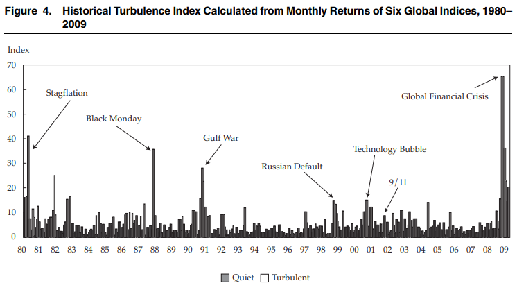
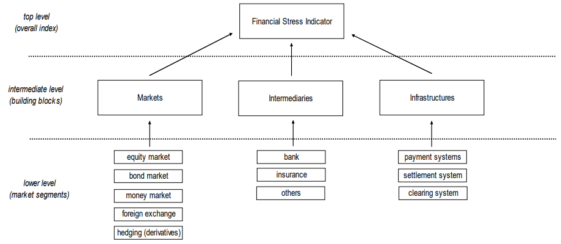
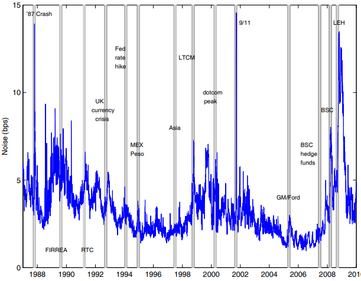
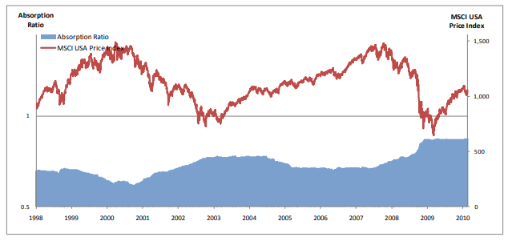

시스템 리스크 분석: (2-2) 시장위험 측정 방법
Systemic Risk Measure - Market risk
서상원 (2018)
시스템리스크 측정 방법 중 시장위험을 측정하는 방법들을 살펴본다.
시장위험 측정방법
TURB: Turbulence index
금융시장이나 자산시장에서 형성되는 가격의 변동이 통상적인 패턴에서 벗어나는 경우를 금융혼란(financial turbulence)이라고 정의하고 이를 “Mahalanobis distance”라는 측도를 사용하여 측정
- 혼란지수(turbulence index)는 여러 자산의 수익률들이 자신의 과거 평균치로부터 얼마나 괴리되어 형성되는지를 변동성을 감안하여 평균적으로 측정
- \(d_t \equiv (y_t - \mu)\sum^{-1}(y_t - \mu)'\)
- \(y_t\)는 자산 수익률 벡터, \(\mu\)는 자산 수익률 표본평균 벡터, \(\sum\)은 자산 수익률의 표본공분산 행렬
- 분석 결과:
- 혼란지수로 판단할 때 글로벌 금융위기기간이 1980년대 이후 혼란도가 가장 높았던 시기
- 금융 혼란기와 평온기를 비교하면, 금융자산의 수익률-위험 비율은 평온기에 비해 혼란기에서 훨씬 낮게 나타남
- 혼란기가 시작되면 대략 1개월 이상의 기간동안 혼란기가 지속되는 특성 관측.

CISS: Composite Indicator of Systemic Stress
다수의 금융시장 지표들을 종합하여 금융시스템의 위험 상황을 알려주는 종합지표
- 금융시스템을 단기금융시장, 채권시장, 주식시장, 금융기관 및 외환 시장 등 5개의 하위부문으로 구분, 각 하위부문별로 3개씩의 정보변수들을 고려하여 총 15개의 변수를 이용하여 종합지수를 작성

각 하위부문별로 3개씩의 정보변수 각각을 경험 누적분포함수(empirical cumulative distribution function)를 이용하여 [0, 1] 사이의 값을 가지도록 변환, 변환된 변수들을 단순 평균하여 해당 하위부문의 종합지수를 산출
\({CISS}_t = (w \circ s_t)C_t(w \circ s_t)'\)
- \(w\)는 5개의 하위부문에 대한 가중치 벡터 (주관적)
- \(s_t\)는 5개의 하위부문 종합지수 벡터
- = Hadamard product (벡터 원소간 곱)
- \(C_t\)는 5개의 하위부문 종합지수간 상관계수 행렬
CISS에 마코프 전환모형(Markov switching model)을 적용하여 정상, 경계, 위험 등 3개의 국면을 식별

NOIS: Market noise
미국 국채시장에서의 일별 거래정보를 통해 시장 잡음(market noise)을 측정
이자율의 term structure에 대한 Svensson(1994) 모형을 이용하여 순간 선도이자율 (instantaneous forward rate) \(f\) 를 다음과 같이 표시
- \(f(m,b) = \beta_0+\beta_1 exp(-\frac{m}{\tau_1})+\beta_2\frac{m}{\tau_1}exp(-\frac{m}{\tau_1})+\beta_3\frac{m}{\tau_2}exp(-\frac{m}{\tau_2})\)
- \(m\)은 만기
- \(b = (\beta_0, \beta_1, \beta_2, \beta_3, \tau_1, \tau_2)\)는 모수 벡터
실제 거래된 미 국채수익률이 추정된 수익률곡선으로부터 평균적으로 얼마나 괴리되어 있는지를 다음과 같이 측정
- \({Noise}_t = \sqrt{\frac{1}{N_t}\sum^{N_t}_{i=1}[y^i_t-y^i(b_t)]^2}\)
- \(N_t\)는 미국 국채 거래건수, \(y^i_t\)는 미국 국채의 실현된 수익률, \(y^i(b_t)\)는 수익률 곡선에 의해 추정된 수익률
미국 국채시장이 금융시장의 중심적 위치를 차지하기 때문에 미국 국채시장에서의 시장 잡음은 단지 국채시장의 유동성만을 나타내는 것이 아니라 전반적인 금융시장의 유동성 상황을 나타낸다고 주장
분석 결과: 시장 잡음 지표는 bid-ask spread나 on-the-run premium과 같은 통상적인 시장 유동성 지표보다 위기시에 더욱 민감한 움직임을 보임으로써 금융시장의 유동성 상황을 보다 적절히 반영하는 것으로 평가

PCA-AR: Pricipal component analysis-Absorption Ratio
금융자산 간에 강한 연관성이 형성되면 위기시에 부정적 영향이 보다 신속하고 광범위하게 파급됨
- \(AR=\frac{\sum^{n}_{i=1}\lambda_i}{\sum^{N}_{i=1}\lambda_i}\)
- \(\lambda\)는 \(i\)번째 eigenvalue (N개의 금융자산의 과거 수익률을 PCA 기법으로 분석했을 때의 주성분 공분산)
- \(n\)개 주성분
- 실험: 미국의 주식시장에 대해 51개 산업별 지수간 동조성이 변화된 모습을 AR을 기준으로 측정 (N=51, n=10)
- AR이 크게 증가한 이후에 미국 주가가 크게 하락한 현상이 나타났으며, 반대로 AR이 낮은 모습을 보인 기간 이후에 주가가 상승함. 또한, AR은 주식시장 뿐만 아니라 주택시장 등을 포함하는 전반적인 금융 및 자산시장의 불안정과 국제 금융위기에 대해 선행성을 지니는 것으로 나타남.

참고문헌
서상원. (2018). 시스템리스크의 측정과 관리: 서베이와 제언. 금융안정연구, 19(1), 131-232.
Hollo, D., Kremer, M., & Lo Duca, M. (2012). CISS-a composite indicator of systemic stress in the financial system.
Hu, G. X., Pan, J., & Wang, J. (2013). Noise as information for illiquidity. The Journal of Finance, 68(6), 2341-2382.
Kritzman, M., & Li, Y. (2010). Skulls, financial turbulence, and risk management. Financial Analysts Journal, 66(5), 30-41.
Kritzman, M., Li, Y., Page, S., & Rigobon, R. (2011). Principal components as a measure of systemic risk. The Journal of Portfolio Management, 37(4), 112-126.